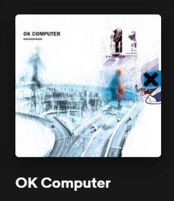

1993
- Pablo Honey -
- You
- Creep
- How Do You?
- Stop Whispering
- Thinking About You
- Anyone Can PLay Guitar
- Ripcord
- Vegetable
- Prove Yourself
- I Can't
- Lurgee
1993
- Pablo Honey -
1995
- The Bends -
1997
- Ok Computer -
2000
- Kid A -
2001
- Amnesiac -
2003
- Hail to the Thief -
2007
- In Rainbows -
2011

- The King of Limbs -
2016
- A Moon Shaped Pool -
Pablo Honey
Pablo Honey (1993) no fue tan bueno en general, pero demostraron que podían rockear como los grandes rockeros duros en la versión de Blow Out Astoria, y Creep es la canción grunge más grande junto con Smells Like Teen Spirit de Nirvana. Un buen comienzo, diré.
The Bends
The Bends (1995) fue un clásico del rock instantáneo y arrasó con todo lo que estaba pasando en la escena del rock en ese momento, y también la cambió. Mejor que cualquier álbum de REM, y mejor que nada de los britpoppers (Oasis/The Verve/Blur) en esa década con éxitos como Street Spirit, Fake Plastic Trees, Just, High And Dry, My Iron Lung. También allanaron el camino para Coldplay, Muse, Travis, etc. y, en general, crearon toda la escena indie a principios de los 2000 con ese sonido.
Ok Computer
OK Computer (1997) los llevó a un nuevo territorio: el rock progresivo. Y de nuevo fueron directamente a la cima de ese género. Está a la altura de los clásicos del rock progresivo como Dark Side of The Moon de Pink Floyd e In The Court of The Crimson King de King Crimson, y tal vez incluso mejor si miras el volumen de material de canciones geniales en esos discos. Fue el álbum que trajo de vuelta la década de 1970 y el "rock salvado". Repleto de clásicos: Paranoid Android, No Surprises, Karma Police, Let Down, Lucky, Climbing Up The Walls, Airbag, Exit Music... Y también grandes caras B.
Kid A
Kid A (2000) era Radiohead tirando sus guitarras (en su mayoría) y adentrándose en la electrónica. Una vez más, fueron directamente a la cima de ese género, junto con Aphex Twin. Kid A es considerado por muchos como el mejor álbum de música electrónica de todos los tiempos y, a menudo, como el mejor disco del siglo XXI. Tiene clásicos como Everything In It's Right Place e Idioteque, la excelente balada How To Disappear Completely y la distopía explosiva y jazzística de The National Anthem con su gran línea de bajo. Y si ese disco no fuera lo suficientemente bueno: las canciones son aún mejores en vivo. (¿Olvidé mencionar lo buenos que son en vivo?)
Amnesiac
Amnésico (2001). Kid A es posiblemente el mejor disco de electrónica de todos los tiempos y muchos dirán que es el mejor disco del siglo XXI, y aun así grabaron Amnesiac en la misma sesión, que en realidad no se queda atrás. Contiene Pyramid Song, una de sus mejores y más singulares canciones, y una pista que, en mi opinión, muy pocos de los rockeros clásicos podrían producir. También grandes momentos como You And Whose Army, I Might Be Wrong, Knives Out y Life In A Glasshouse. La hermosa True Love Waits también da vueltas en conciertos en vivo.
Hail to the Thief
Hail To The Thief (2003) es una mezcla entre rock alternativo y electrónica, y resume la música de Radiohead hasta ese momento. No es su trabajo más consistente, contiene algunos rellenos debido a su lista de canciones de 14 canciones, pero los aspectos más destacados (como There There, 2 + 2 = 5, Where I End And You Begin y A Wolf At The Door) los mantiene bastante por delante. todos los demás en la ciudad en ese período. También siguen haciendo música bastante única. Gagging Order habría sido un punto culminante en la mayoría de las carreras de otras bandas. Para Radiohead es solo otra cara B.
In Rainbows
In Rainbows (2007) es a menudo aclamado como el mejor disco independiente de los últimos 10 años. Weird Fishes y Reckoner son destacados, pero también grandes momentos como Jigsaw Falling Into Place, Nude, 15 Step y All I Need. Y una vez más: incluso si sorprendieron a los competidores con el disco principal, tenían un gran disco 2 (básicamente un disco del lado B) además de eso. Solo el disco 2 seguiría siendo uno de los mejores discos de ese año.
The King of Limbs
The King of Limbs (2011) no es su mayor logro, pero contiene a Bloom, y la sesión en vivo de esa canción en particular es extraordinaria (la sesión en vivo de todo el álbum demuestra que todavía están superando los límites de la música, aunque ya lo habían cambiado al menos tres veces antes). The Daily Mail y Staircase, lanzados por separado, también prueban que Radiohead tiene algo en marcha.
A Moon Shaped Pool
A Moon Shaped Pool (2016): Se lanzan Burn The Witch y Daydreamer, y ambos son bastante sorprendentes, el último incluso alucinante. Otro álbum completo que pronto será lanzado.